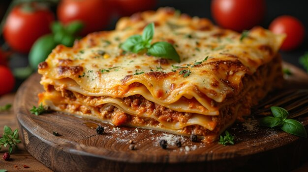

Lasagna recipe

Discription
Lasagna is a classic Italian dish made with layers of wide pasta sheets,
a rich meat sauce, creamy béchamel sauce, and melted cheese.
It's a hearty and comforting meal perfect for family dinners or special occasions.
Ingredients
- 12 lasagna noodles
- 1 lb ground beef
- 1 small onion, chopped
- 2 cloves garlic, minced
- 1 can (14 oz) crushed tomatoes
- 1 can (6 oz) tomato paste
- 1 can (6 oz) tomato sauce
- 2 tbsp sugar
- 1 tsp dried basil
- 1 tsp dried oregano
- Salt and pepper to taste
- 15 oz ricotta cheese
- 2 cups shredded mozzarella cheese
- 1/2 cup grated Parmesan cheese
- 1 egg
- 2 tbsp fresh parsley, chopped
- cups béchamel sauce (made with butter, flour, and milk)
Steps
- Preheat your oven to 375°F (190°C).
- Cook lasagna noodles according to package directions. Drain and set aside.
- In a large skillet, brown the ground beef with the chopped onion and minced garlic. Drain excess fat.
- Add the crushed tomatoes, tomato paste, tomato sauce, sugar, basil, oregano, salt, and pepper to the beef mixture. Simmer for 30 minutes, stirring occasionally.
- In a bowl, mix ricotta cheese, egg, parsley, and half of the grated Parmesan cheese.
- In a baking dish, spread a thin layer of the meat sauce. Add a layer of lasagna noodles, followed by a layer of ricotta mixture, a little béchamel sauce, and mozzarella cheese.
- Repeat layering, ending with a layer of sauce and mozzarella cheese on top.
- Cover with foil and bake for 25 minutes. Remove foil and bake for an additional 10 minutes or until cheese is bubbly and golden.
- Let the lasagna rest for 10 minutes before serving.
Home page